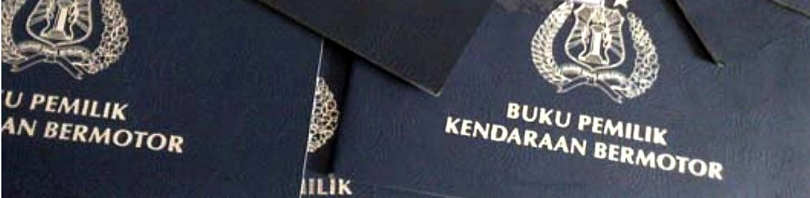

Layanan Buku Kepemilikan Kendaraan Bermotor

Penjelasan
- BPKB adalah: Buku yang dikeluarkan/diterbitkan oleh Satuan Lalu Lintas Polri sebagai bukti kepemilikan kendaraan bermotor.
- BPKB berfungsi sebagai Surat Bukti Kepemilikan Kendaraan Bermotor.
- Penerbitan BPKB dilaksanakan oleh Satuan Lalu Lintas Kepolisian Negara Republik Indonesia.
- Spesifikasi teknis dan pengadaan BPKB ditetapkan oleh Kepolisian Negara Republik Indonesia.
- Bersamaan dengan pendaftaran BPKB diberikan Surat Tanda Nomor Kendaraan Bermotor dan Tanda Nomor Kendaraan Bermotor (STNK).
Tujuan
- Penyelenggaraan Registrasi dan Identifikasi Kendaraan Bermotor dalam bentuk BPKB adalah untuk kepentingan pelaksanaan tugas-tugas Kepolisian Negara Republik Indonesia dalam menciptakan keamanan dan ketertiban masyarakat, terutama yang berkaitan dengan penyelidikan/penyidikan pada kasus pelanggarandan kejahatan yang berkaitan dengan kendaraan bermotor.
- Perkembangan kejahatan semakin canggih dan kompleks, sehingga mengharuskan Polri mengerahkan segenap kekuatan untuk menanggulangi, antara lain melalui Registrasi dan Identifikasi lalulintas/pendaftaran Kendaraan Bermotor.
- Untuk itu perlu diambil langkah-langkah guna menyamakan persepsi dan tindakan dalam proses penerbitan BPKB terutama mekanisme dan prosedur penerbitan BPKB.
Fungsi dan peranan BPKB
- Semua jenis kendaraan bermotor yang sudah terdaftar dan mempunyai STNK untuk suatu kendaraan bermotor baik dalam keadaan berjalan maupun dalam keadaan rusak diharuskan memiliki BPKB sebagai tanda pengenal kendaraan bermotor.
- BPKB dapat disamakan dengan Certificate of Ownership yang disempurnakan dan merupakan dokumen penting yang harus disimpan baik-baik oleh yang bersangkutan.
- BPKB akan mempertinggi daya guna dari tata cara administrasi pendaftaran kendaraan bermotor, sehingga di samping meningkatkan public service juga dimanfaatkan untuk menyempurnakan cara pengawasan terhadap pemasukan keuangan negara non pajak, kepemilikan kendaraan bermotor dan sebagainya.
- BPKB dapat dijadikan sebagai jaminan/tanggungan dalam pinjam-meminjam berdasarkan kepercayaan masyarakat.